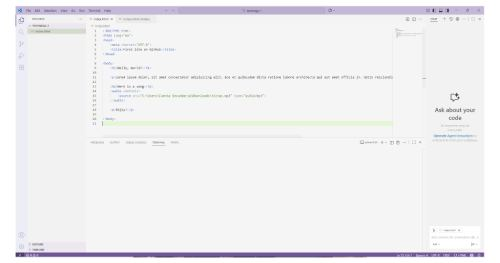

I like to let the coriousity and the knowledge guide me on the process so far I like to travel and make some beats or other called produce music but sometimes I feel like I need to study more and experiment on everything thas why Im doing this webpage
